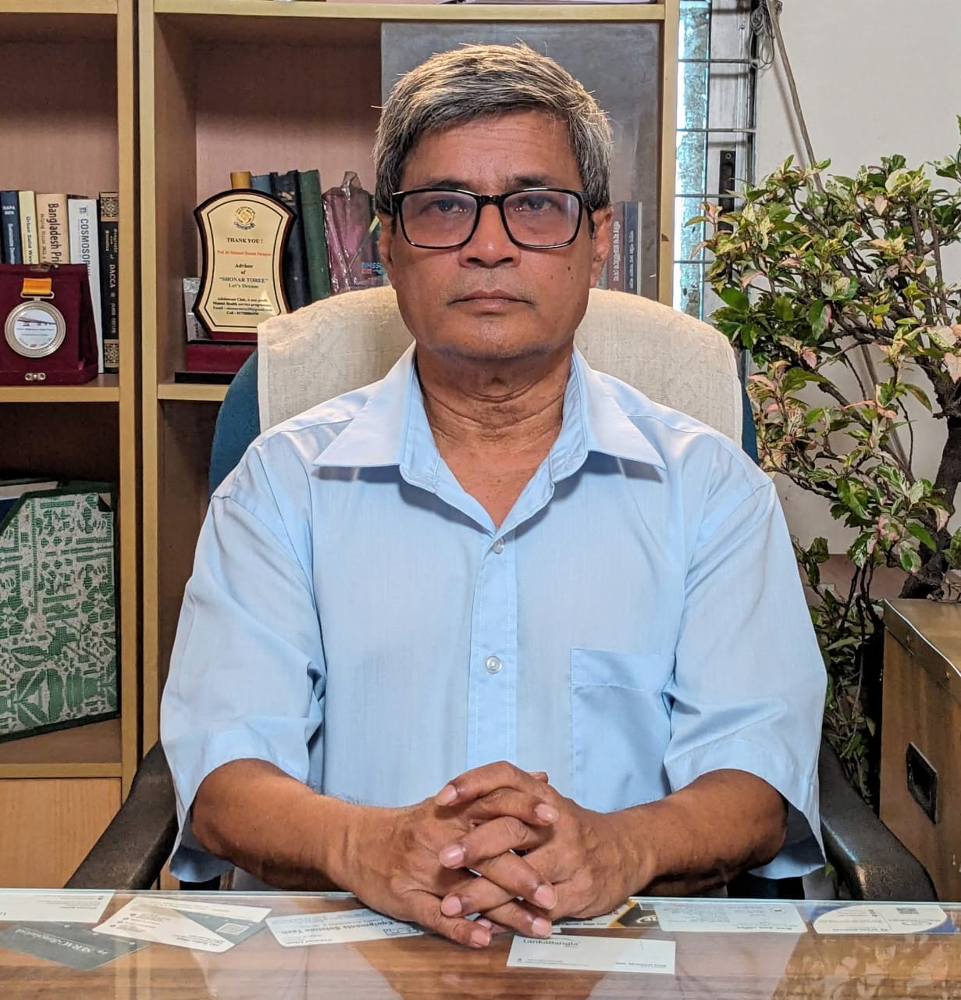
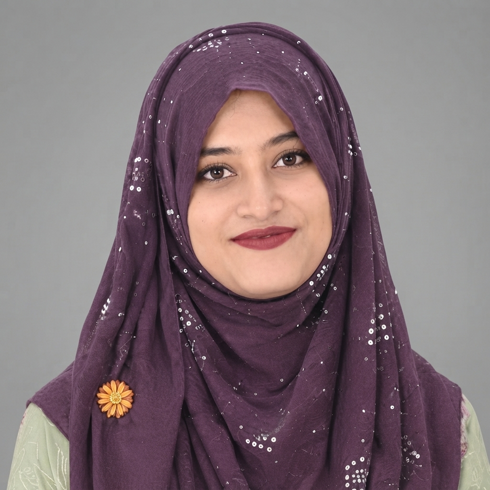

Occupational Health and Safety
Workplace hazards, injury prevention, ergonomics and the health of workers, with a focus on garment and other industrial settings.
Research at DOEH looks at occupational, environmental and public health challenges, to support evidence-informed decisions, safer workplaces and healthier communities.
Themes drawn from the research interests listed on faculty profiles. They describe areas of expertise, not formal research centres or laboratories.
Workplace hazards, injury prevention, ergonomics and the health of workers, with a focus on garment and other industrial settings.
Environmental exposures and their effects on health, including arsenic in drinking water, pollution and waste.
How climate change, disasters and emergencies affect health and how communities can prepare and respond.
The health of communities and vulnerable groups, including nutrition, maternal and child health and non-communicable disease.
Two studies by DOEH faculty that look at the health of workers in Bangladesh.
Cross-sectional study of 118 workers in 15 lead acid battery industries in Dhaka. Mean blood lead level was 65.25 μg/dL, and higher levels were associated with hypertension and anaemia among the workers.
Read the article (opens in a new tab)Cross-sectional study of 208 garment workers in one Dhaka factory. 29.8% reported a slip, trip or fall in the previous six months, and workplace stress was the most commonly reported contributing factor.
Read the article (opens in a new tab)Journal articles by DOEH faculty. Each entry was checked against the publisher or PubMed record and links to the original source.
Research interests as listed on each faculty profile.
Professor & Advisor

Professor & Head of Department
Associate Professor
Honorary Professor
Ex Director General, Fire Service & Civil Defence
Associate Professor
Associate Professor
Adjunct Faculty
Professor

Adjunct Faculty
The steps of a typical research project, to help you think about your own question.
Start from a real problem in a workplace, community or environment, and state what you want to find out.
See what is already known, including the studies listed on this page, and find the gap your question fills.
Match the design to the question, for example a cross-sectional survey, a case-control study or an exposure assessment.
Plan the sample and measures, collect the data carefully and analyse it with an appropriate method.
Follow research ethics, obtain informed consent and handle personal data responsibly.
Write up the results clearly and communicate them to the people who can use them.
Thesis requirements and supervision arrangements are set by each program. To ask about current requirements, contact the department.
Meet the faculty, read the publications, or get in touch to talk about research or collaboration.